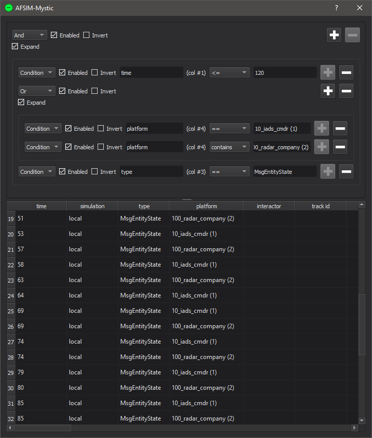
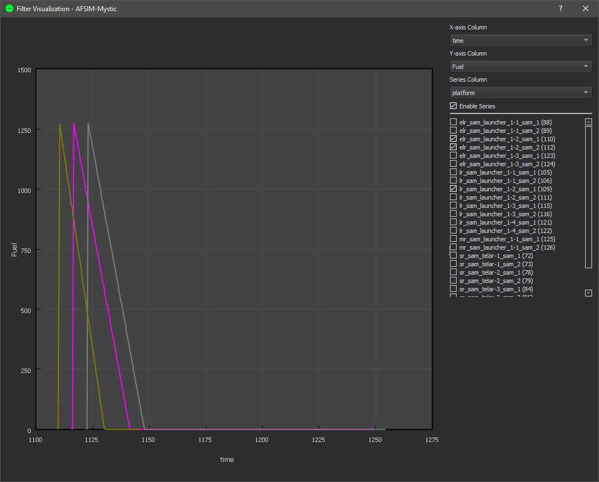

Event List - Mystic¶
Summary¶
The event list is accessible from tools->Event List
As an example, this filter will accept all events that happened in the first 120 seconds, apply to either the “10_iads_cmdr” or “100_radar_company” platforms, and have the “MsgEntityState” type.
The event list dialog shows all of the currently loaded events. While this dialog is open, the rest of the application is inaccessible.
In the top half of this dialog is the Filter List, and in the bottom half is the Event List. Only the events that are loaded and pass the filters will be shown.
Filter Types¶
There are 3 types of filters that can be chosen from the dropdown menu.
Condition: Allows the user to test how the value in a given column compares to some value. For example, a filter testing for column time compares <= to 120 will allow all events that occurred in the first 120 seconds to pass.
And: This filter groups other filters. An event will pass this filter if it passes all of its sub-filters. If there are no enabled sub-filters, the event passes.
Or: This filter groups other filters. An event will pass this filter if it passes at least one of its sub-filters. If there are no enabled sub-filters, the event passes.
Comparison Types¶
The following comparisons are always available:
==: Passes if the value in the event is equal to the given value.
!=: Passes if the value in the event is NOT equal to the given value.
contains: Passes if the value in the event, treated as text, contains the given text. This check is not case sensitive.
The following comparisons are available if the given value is numerical:
<: Passes if the value in the event is less than the given value.
<=: Passes if the value in the event is less than or equal to the given value.
>: Passes if the value in the event is greater than the given value.
>=: Passes if the value in the event is greater than or equal to the given value.
The following comparisons are available if the specified column is “platform” or “interactor”:
is on side: Passes if the event applies to a platform on the given side.
is of type: Passes if the event applies to a platform of the given type.
is of category: Passes if the event applies to a platform with the given category.
Adding Filters¶
There are 2 main ways to add a filter.
For And/Or filters, select “Add Child” from its context menu or click the Add (+) button to give it a sub-filter that can be filled in by the user.
Select “Create Filter” from a context menu in the Event List. This will create a new filter at the top level.
Rearranging Filters¶
Often times a user may need to rearrange filters, either because their logic has changed, or because a filter was created in the wrong location. Selecting “Cut” from the filter context menu will remove the selected filter and its children so that they can be pasted elsewhere. A cut or copied filter can be pasted as many times as necessary.
To remove a filter without copying it for later, click the Remove (-) button in its row. To quickly remove all filters, right-click on the root (top) filter and select “Clear Children”.
Enable/Disable Filters¶
The Enable check box indicates whether a filter is enabled. A filter that is not enabled will not be considered when updating the event list. If a grouping filter is disabled but it has sub-filters that are enabled, none of the sub-filters will be considered. I.e. in order for a filter to be checked, all of its ancestors must also be enabled.
To disable all filters, one simply needs to disable the root item.
Invert Filters¶
The Invert check box allows the user to invert the result of a filter. E.g. the “contains” test becomes “does not contain”. An inverted AND, aka NAND, has the logic “Passes if at least one sub-filter does not pass”. An inverted OR, aka NOR, has the logic “Passes if all sub-filters do not pass”.
Import & Export¶
In the filter context menu there are two options called “Import” and “Export”.
Export will save the selected filter, including all its children, so it can be imported later. Exported filters are given names to make them easy to find again in the future.
Import will paste an exported filter at the selected filter. Once pasted, modifying the imported filter will not affect the exported filter.
Exported filters are saved and can still be imported after closing and re-opening the application.
Hide Columns¶
In the column header context menu there are two options called “Hide <column-name>” and “Show All Hidden Columns”.
Hidden columns will still participate in filtering, but will not be shown.
Export to CSV¶
Selecting “Export to CSV” from the Event List context menu will save the filtered events to a CSV file.
Plotting¶
Selecting “Plot” from the Event List context menu allows the user to plot data from the filtered events. The plot allows users to specify columns for the X and Y axes, as well as a column to represent different data series.
Only columns which contain numerical data may be used for axes, and only a select few columns may be used for series. The X-axis is always “time” by default. If the column the user right-clicked on to open the menu contains only numerical data, then it will be used as the default Y-axis column. By checking and un-checking the boxes in the series list, individual series may be shown or hidden.